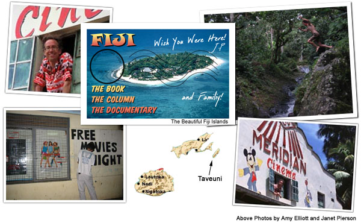
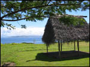
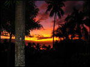

|
|
 |
|
"The First Two Months" by Janet Pierson We're doing great! It's gorgeous here, truly is picture-postcard-perfect and once I got over my initial shock at how poor everyone was, I started to be able to really enjoy the beauty and simplicity. It is a pared down life. Speed is slow. None of the overbooked commitments of NY. Fewer choices, more time. Great relief from envy and materialism. Ironically, Garrison (New York) was a perfect stepping stone to life here - it's rural, it's beautiful, dirt roads, tremendous foliage, it's on the water, there's less "stuff" than elsewhere, "stuff" is hard to get, everyone knows each other, majority of people are all related to each other, and the main business is tourism (well, outside of hand-farming: taro, kava and copra). I find myself thinking the power is actually better here but that's a complete fallacy - it's just that there is no central power to go out like in Garrison!! This is an island without electricity save for a few generators. I've also come to find that there are constant fundraisers: for the school, the hospital, rotary, the soccer association, the rugby association, the teacher's association, etc. People ask about our days. John rises at 6am year-round-dawn and reads on the front porch. Wyatt rises at 6:50 for cereal and is out to the bus stop at 7:15 in his short-sleeved white button-down shirt and sulu. The kids ride the regular public bus. Multiple buses. Some of which are full and go past. Some of which are not full and turn up the hill and stop on the way down if they haven't filled up on the hill. And a few of which inevitably break down before making it to school. Peals of laughter waft up from the bure bus stop games. I rise at 9 and we check email. Reading and responding can take hours. Some days I manage a yoga practice. John writes. Some days we take the 5km walk to Wariki where Wyatt's school (Holy Cross), the church, and the theatre reside, then hitch back to get the car for the end of day school pickup. Some days we drive to the cinema then walk the mile to the Post Office. If we feel like eating out, lunch choices are Frank Fong's "Cannibal Cafe," - local curry, fish or rice, or the Garden Island Resort - a popular diving accommodation. Main food shopping and the ferry drop for film print returns are farther down the road in Naqara. Lately we've started sea kayaking about a 40 min. drive north, taking off from my favorite bit of coastline and the best pizza in Fiji, just south of the airport. The kayaking is magnificent - out of a page of the most beautiful travel brochure you've ever seen. Hard to believe it's real. 3:45 finds us back at the cinema, where we might have been hanging out sweeping, putting together displays, reading, chatting with the locals, to meet Wyatt after school. Drive home giving tons of kids rides along the way. They hop in the back of our twin cabb truck and knock when it's time to get out. Some days we fit in a swim down at the cove, or Wyatt and John play tennis. Homework, more email, watching the sunset, reading, Cia makes dinner: on non-movie nights - that's the day. On movie nights - Thursday-Sunday we leave at 6:40 to drive to the cinema. We can tell by the traffic (that's FOOT traffic) how crowded it will be. Free movies begin at 7:30 except if the theatre is full by 7, we'll start then. Biggest hit so far was Scorpion King. But Panic Room, Enough (w/ J.Lo - a real island favorite), and Insomnia surprising crowd pleasers. The worst bomb was Men in Black II, followed by Stuart Little 2. You know the word is really bad when it's free, and people who have absolutely nothing else to do, stay away. Food is totally primitive and limited. Basically curry (anything) or fried ( fish, fries or rice). Alternatives are roast chicken, chop suey, or fish in coconut milk. My staples are fresh bread, cookies and ice cream pops. I was surprised to see huge piles of Maggi noodles (like our ramon ) in stores and at the cash register - turns out locals like the quick noodles (sans soup) for school lunch. Instant coffee and diet coke. Peanuts and peanut butter. So it's simple. We read, talk, walk, eat, email, swim. The kids and John play tennis on the grass court in our yard. No housework, almost no cooking. The house came with an Indian housegirl who sweeps & hangs laundry on the line. I pay a lovely Fijian woman $6 Fijian/night, that's $3 U.S. to cook dinner! We sit. It's had this huge positive effect on the family unit. Instead of the alienation there's active engagement -just lots of talk and time together.
Photos from Fiji
 
 The kids have been been remarkable! Wyatt particularly so. He loves every single aspect of this. He's just been great company - funny, wise, open, just enjoying everything. Great with the other Fijian kids. Great about his school. Initially, he balked at wearing the uniform sulu (wrap around skirt). Now he fastidiously tucks in his short sleeved white shirt just so. He's like a puppy with the other fijian kids. Always touching, play hitting, laughing. The locals love having him at their school - they love yelling "Wyatt" as we drive by. John teased him yesterday that he was getting more of the yells - ascending in popularity. Prefers this fijian catholic school for its more practical approach - woodworking, accounting, agriculture (for which we had to get him his own cane knife - think machete. ) There are probably 39 kids in his class, and if they forget their homework, they have to squat and waddle around the room 5 times. Loves music where all they do is sing. Misses his friends but thinks there's much more to do here. Sometimes he has trouble understanding the kids. English is the official language but it's English learned in school. To each other, they speak Fijian - a musical language with many sound and visual cues. Doesn't seem particularly "word" based. Just got Wyatt a bike. Took a month for one to come into the store but finally, it's great to see him ride. Just fascinating here to see the kids' freedom and to hear them laugh. Wyatt explained , that they're not really laughing at anything in particular, or because there's something funny, they just laugh at "everything!" You really do get a sense of the richness when there's no material wealth. Kids have fun just playing with the air. Both kids love the free movies. They pickup the garbage, help change the display, confer about programming and timing. Wyatt, in particular, is involved in every aspect of the cinema and our impending tv series/film doc. It's the epitome of the family business and has united us in a most positive, healthy way. Still waiting to resolve our tv series/film doc plans. Have been in very serious negotiations but not settled yet. One the one hand, it's been a great relief not to have cameras around. On the other, I know great, great stuff has been missed. John's already got tons of excellent material for his book. There's great material for a series or doc too - we'll just have to see how it plays out. Showing free movies is a thrill. The audience is wildly expressive and enthusiastic. The Fijians are extremely warm and friendly people. As well as very handsome and surprisingly stylish within their limited means. However, they're not necessarily well suited to the modern working world. Just the smallest administrative function or job can seem insurmountable. As much as life is the same here - it's so different. None of the rules and regimentation of our lives. No seat belts, everyone just scrambles into the back of pick up trucks. Everyone hitches, most trucks give rides. No adults chaperoning kids' swims. No bathing suits - people just swim in their clothes which is one of my favorite differences. It's so much less precious than bathing suit fashions. I was watching these two little kids at the Bouma falls the other day - one came running up the wooden bridge carrying his cane knife. We're talking about a 6 year old. Scrambled up to sit on the rail, knife in hand. The kids proceeded to play on the rails - racing on their bums, knees and hands, then walking - it was everything we pay for in gymnastic classes - yet here unfettered, free and unchaperoned. So OK, I don't know the child mortality rates but the freedom is intoxicating. I repeat, it's just astounding to hear the gales of laughter from the morning bus stop. Wyatt says they play "corner." It sounds like there couldn't be anything better in the world. What else for this brief summary? Well, this house we're in - it's lovely in parts but totally jerry-rigged and in a constant state of breaking down and repair. There's solar power just barely. Sometimes the lights work. Sometimes they don't. We're very lucky to have a working phone line for internet use but I have to take turns plugging in and out the airport, printer, external hard drive, camera battery recharge or palm recharge. There's one plug and little power. After dark (year round @ 6:30pm) the solar lights are dim. I always carry a flashlight. This house is roomy and dark. Sometimes we use a back up generator. Sometimes there's water. The gas fridge is barely cold. The window shutters bang in the wind. Unfortunately we're tied more than we'd like to the owner, a skittish alcoholic aussie ex-pat who lives in the bure outside. He's the kind of guy that means well but just can't help screwing up. He went to all this trouble to tile a second bathroom - tile is lovely but crooked with a gaping hole in the floor! He blames everything on Fiji - labor a nightmare, parts hard to get. I know it's true. I also know that some of the expats are here because it's the end of the line. They just aren't fit to live anywhere else. And I haven't even mentioned many of the normal joys of Fiji day to day living - mosquitos, mildew, checking for ants on your toothbrush, lizards on the walls, toads by the kitchen, howling screeching dogs all night, and bones in your chicken. (Wyatt and John really love this last part - love picking up chicken pieces by the bone, eating with their hands.) So it's turned out to be totally enjoyable. Not humid yet with many glorious weather days. Wyatt said the most amazing thing tonight as we sat watching the sunset. He said he liked it better here and gave the following reason. He said, " in America everyone has his own football. Here, only one kid will have a football [really a rugby ball] and all the kids will gather in the field and play with it together. Or like my bike. It may be mine, but everyone has fun taking turns riding it." So that's it for now, from this glorious island on the other side of the world - made more inhabitable by the magic of email. It's great to be away and still be in touch.
Photos from Fiji

  |
{% include footer.html %}
{% include copyright.html %}
{% include barmap.html %} {% include topmap.html %}